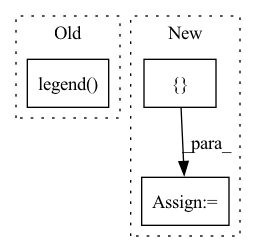

Pattern ID :34780
Before Change
plt.hlines(threshold, plt_x[0], plt_x[-1], colors="g",
linestyles="dashed")
plt.legend( ["Test", "Prediction"])
if savefig is not None:
plt.savefig(savefig)
After Change
plt_total = y_total[:, :, idx].flatten().copy()
assert len(plt_total) == len(plt_test), "All arrays must have the same length."
plt.plot(plt_x, plt_total, alpha=.75)
legend += [ "Total load"In pattern: SUPERPATTERN
Frequency: 4
Non-data size: 3
Instances Fragment ID: 99762746
Project Name: uca-datalab/nilm-thresholding
Commit Name: dcd15feeb938d4b72d0923dc0951d8e0a73261c7
Time: 2020-05-19
Author: danipg1409@gmail.com
File Name: better_nilm/plot_utils.py
M Class Name: AnonimousClass
N Class Name: AnonimousClass
M Method Name: plot_real_vs_prediction(7)
N Method Name: plot_real_vs_prediction(5)
M Parent Class:
N Parent Class:
M File Name: better_nilm/plot_utils.py
N File Name: better_nilm/plot_utils.py
M Start Line: 28
M End Line: 38
N Start Line: 6
N End Line: 55
Before Change
norm_regret = np.sort(1 - (np.array(target) / np.max(target)))
y = np.arange(len(norm_regret)) / float(len(norm_regret) - 1)
plt.plot(norm_regret, y)
plt.legend( data_list, fontsize=23, loc="lower right")
plt.savefig(f"{model}_{sample_client}_cdf.pdf", bbox_inches="tight")
plt.close()
return targetAfter Change
elif data_list[0].endswith("openml"):
legend = [x.split("@")[0] for x in data_list]
elif data_list[0].lower == "cora":
legend = [ "Cora", "CiteSeer", "PubMed" Fragment ID: 99762747
Project Name: alibaba/federatedscope
Commit Name: fccacfc46144d6306e8e32fefe629bd08ef2a289
Time: 2022-06-17
Author: 39145382+rayrayraykk@users.noreply.github.com
File Name: benchmark/FedHPOB/fedhpob/utils/draw.py
M Class Name: AnonimousClass
N Class Name: AnonimousClass
M Method Name: ecdf(5)
N Method Name: ecdf(4)
M Parent Class:
N Parent Class:
M File Name: benchmark/FedHPOB/fedhpob/utils/draw.py
N File Name: benchmark/FedHPOB/fedhpob/utils/draw.py
M Start Line: 44
M End Line: 49
N Start Line: 25
N End Line: 64
Before Change
ax.set_xticks([0, 4, 8, 12, 16, 20, 24])
ax.set_xlabel("Layer")
ax.set_ylabel("Normalized MSE")
ax.legend( ["no factorize", "no sharing", "F-FNO"], frameon=False)
def get_step_losses(dataset, group):
api = wandb.Api()After Change
layers_2 = [4, 8, 12, 16, 20, 24]
xs = [4, 8, 12, 16, 20, 24]
dataset = "navier-stokes-4"
lines = []
groups = [f"ablation/no_factorization/{i}_layers" for i in layers_2]
losses = get_test_losses(dataset, groups)
container = plot_line(xs, losses, ax, color=pal[7], linestyle="-") Fragment ID: 99762750
Project Name: alasdairtran/fourierflow
Commit Name: c2268f90cc720dda0e2298528b14a79d198d194c
Time: 2021-09-24
Author: alasdair.tran@gmail.com
File Name: fourierflow/commands/plot.py
M Class Name: AnonimousClass
N Class Name: AnonimousClass
M Method Name: plot_ablation(1)
N Method Name: plot_ablation(1)
M Parent Class:
N Parent Class:
M File Name: fourierflow/commands/plot.py
N File Name: fourierflow/commands/plot.py
M Start Line: 85
M End Line: 103
N Start Line: 107
N End Line: 129
Before Change
ax.set_xticks([0, 4, 8, 12, 16, 20, 24])
ax.set_xlabel("Layer")
ax.set_ylabel("Normalized MSE")
ax.legend( ["FNO", "TF-FNO", "M-FNO", "F-FNO"], frameon=False)
def plot_ablation(ax):
layers_2 = [4, 8, 12, 16, 20, 24]After Change
layers_2 = [4, 8, 12, 16, 20, 24]
xs = [4, 8, 12, 16, 20, 24]
dataset = "navier-stokes-4"
lines = []
groups = [f"ablation/teaching_forcing/{i}_layers" for i in layers_1]
losses = get_test_losses(dataset, groups)
container = plot_line(xs, losses, ax, color=pal[1]) Fragment ID: 99762748
Project Name: alasdairtran/fourierflow
Commit Name: c2268f90cc720dda0e2298528b14a79d198d194c
Time: 2021-09-24
Author: alasdair.tran@gmail.com
File Name: fourierflow/commands/plot.py
M Class Name: AnonimousClass
N Class Name: AnonimousClass
M Method Name: plot_performance_vs_layer(1)
N Method Name: plot_performance_vs_layer(1)
M Parent Class:
N Parent Class:
M File Name: fourierflow/commands/plot.py
N File Name: fourierflow/commands/plot.py
M Start Line: 58
M End Line: 80
N Start Line: 74
N End Line: 102